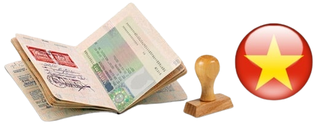

Визы во Вьетнам

Если вы задаетесь вопросами:
- Как получить визу во Вьетнам?
- Какие визы бывают?
- Как их оформить?
- Сколько это стоит?
Тогда эта статья для Вас!
Для начала ознакомьтесь с официальными данными на сайте посольства вот здесь.
Возможно, для вашей поездки будет достаточно безвизового разрешенного срока пребывания.
Если этого количества дней недостаточно, тогда сейчас мы расскажем про все возможные варианты продления этого срока.